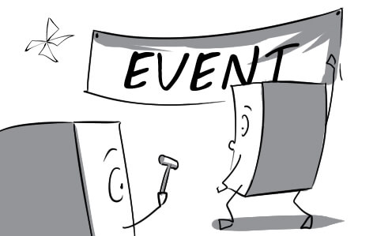
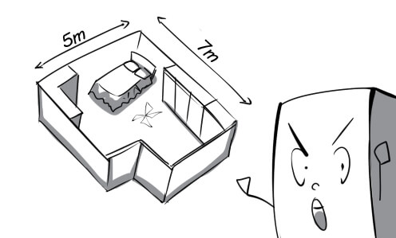
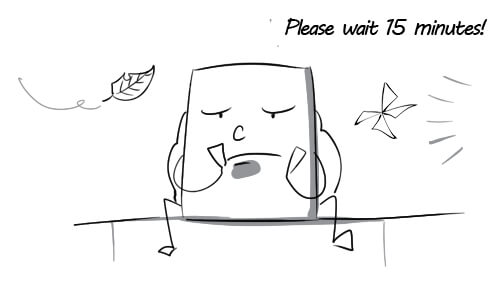
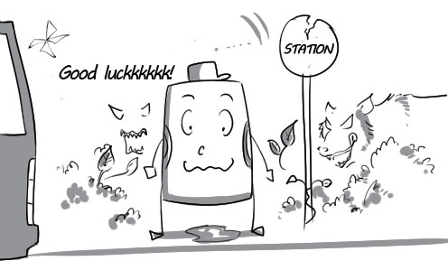
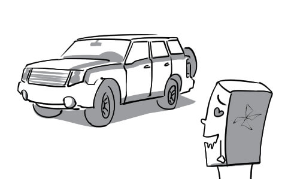
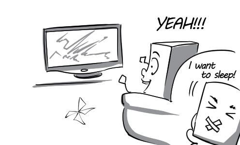
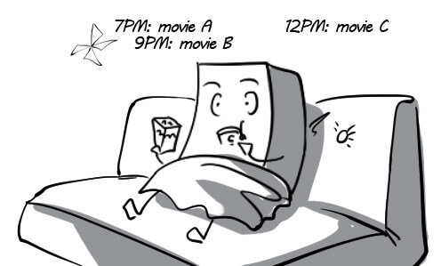

1.
assist: My brother assisted me in decorating the ballroom for the upcoming event.
(trợ giúp) v

2.
coordinate: The leader coordinated all employees to make sure the event ran smoothly.
(phối hợp, điều phối) v
3.
dimension: The dimensions of this hotel room are 7 meters by 5 meters.
(kích thước) n

4.
exact: Peter told me the exact length of the ballroom.
(chính xác) adj
5.
general: The CEO gave a general description of the event.
(tổng quát) adj

6.
ideally: Ideally, there will be no rain on the day the event take place.
(lý tưởng) adv
7.
lead time: He had to work fast because they gave him a little lead time to design the invitation card.
(thời gian tiến hành) n

8.
plan: The director is planning carefully for the upcoming events.
(lên kế hoạch) v
9.
proximity: We choose this restaurant to hold my birthday because of its proximity to my house.
(sự gần) n
10.
regulate: The staff regulates the areas where guests cannot smoke at the event.
(quy định) v
11.
site: Sydney Opera House would be a perfect site to hold this event.
(địa điểm) n
12.
stage: The sport festival will be staged at Labor Culture Palace in Ho Chi Minh city.
(tổ chức) v

13.
agent: This travel agent always has big promotion programs for customers.
(đại lý) n

14.
announcement: The tour guide made an announcement about the departure time.
(thông báo) n
15.
beverage: Peter hasn't decided what beverage he wants to drink yet.
(thức uống) n
16.
blanket: Thanks to the soft and cozy blanket, he had a very sound sleep last night.
(chăn) n

17.
board: He waved goodbye to his friends and boarded the train to Nha Trang.
(lên tàu) v

18.
claim: Peter went to the Lost and Found office to claim his lost luggage.
(nhận) v
19.
delay: His flight was delayed because of some technical problems.
(trì hoãn) v

20.
depart: The children are eager to depart for their excursion at the countryside.
(khởi hành) v
21.
embarkation: Passengers have to show the ship's crew their tickets before embarkation.
(sự cho lên tàu) n

22.
itinerary: With this itinerary, I can take a vacation at the beach as well as in the mountains.
(hành trình) n

23.
prohibit: Jimmy's mother prohibits him from swimming in this lake because it's very deep.
(cấm) v
24.
valid: The Disneyland tickets she bought are just valid for one day.
(có hiệu lực) adj

25.
deal with: This flight attendant is really good at dealing with sick passengers.
(xử trí) v

26.
destination: For the French, London is an ideal tourist destination.
(điểm đến) n
27.
distinguish: We can distinguish between the two airplanes thanks to their logos.
(phân biệt) v

28.
economize: We decided to economize and look for the cheapest tour package.
(tiết kiệm) v

29.
equivalent: The services of Vietnam Airlines are equivalent to those of Jetstar Airlines.
(tương đương) adj

30.
excursion: Mary goes to LAX airport to take an excursion to Hawaii.
(chuyến tham quan) n

31.
expense: Peter was shocked with the expenses of his luxury vacation.
(phí tổn) n

32.
extend: I decided to extend my stay at this hotel by another day.
(gia hạn) v
33.
prospective: With their brand new airplanes, the airline hopes to attract more prospective clients.
(có triển vọng) adj

34.
situation: This airline is so successful that they are always in a sold-out situation.
(tình hình) n

35.
substantially: The airfares have increased substantially in tourist season.
(một cách đáng kể) adv

36.
system: The pilot is very familiar with the operating system of this airplane.
(hệ thống) n

37.
comprehensive: The government succeeded in developing a comprehensive national rail system.
(toàn diện) adj

38.
deluxe: The deluxe coaches are more spacious and convenient than normal ones.
(sang trọng) adj

39.
directory: The directory is really necessary for us when we travel by train.
(sách hướng dẫn) n
40.
duration: The duration of waiting for the train was so long that I fell asleep.
(khoảng thời gian) n

41.
entitle: A train ticket entitles the passenger to board the train.
(cho phép) v
42.
fare: Peter went to the ticket office to pay his fare and get a ticket.
(tiền vé) n

43.
offset: The high cost of the hotel room was offset by the low price of food.
(bù lại) v

44.
operate: The train operates punctually, which makes the passengers very happy.
(hoạt động) v

45.
punctually: David didn't arrive at the station punctually, so he missed his train.
(đúng giờ) adv

46.
relatively: The train was relatively empty although it was the tourist season.
(tương đối) adv

47.
remainder: My brother offered me the remainder of the cake when he was full.
(phần còn lại) n
48.
remote: It is very dangerous to travel to remote areas.
(hẻo lánh) adj

49.
advanced: This hotel is very famous for its advanced service system.
(tiên tiến) adj

50.
chain: Hilton hotel chain has at least one hotel in every city of America.
(chuỗi) n

51.
check in: Mr Green checked in at his hotel as soon as he arrived.
(đăng ký khi đến) v

52.
confirm: The receptionist confirmed his room number again and showed him the way to his room.
(xác nhận) v

53.
expect: Peter expected that his room would have a big bathtub.
(trông đợi) v

54.
housekeeper: The housekeeper goes to all the rooms to make the beds.
(nhân viên dọn phòng) n

55.
notify: The receptionist called to notify me that the breakfast would be ready by 7 a.m.
(thông báo) v

56.
preclude: The flat tire precluded me from traveling any further.
(ngăn cản) v

57.
reservation: I called the hotel to make a reservation for my holidays.
(sự đặt chỗ trước) n

58.
quote: He estimated that he would be quoted a price of $300 for a week-long stay.
(báo giá) v

59.
rate: The rate for a deluxe suite is much higher than that for a normal room.
(mức giá) n

60.
service: The rate for hotel laundry services is much higher than expected.
(dịch vụ) n
61.
busy: Shuttle drivers are always busy in the tourist season.
(bận rộn) adj

62.
coincide: Peter had his birthday timed to coincide with a holiday weekend so that all his friends could come.
(xảy ra đồng thời) v
63.
confusion: They gave him a luxury car instead of a used one because of some confusion about renting the car.
(sự lẫn lộn) n

64.
contact: I contacted a car rental company to rent a car for my vacation.
(liên hệ) v

65.
disappoint: David was disappointed to discover that the car he rented was very old and outdated.
(gây thất vọng) v

66.
intend: Tom intended to arrive at his destination at 12 p.m.
(dự định) v

67.
license: The policeman asked me to show him my driver's license.
(giấy phép) n
68.
nervously: When Peter discovered that his car almost ran out of fuel, he started driving nervously.
(lo lắng) adv
69.
optional: The car rental agency offered him a wide range of optional cars.
(tùy ý) adj

70.
tempt: Ryan was tempted to rent a luxury car although he didn't have much money.
(lôi cuốn) v

71.
thrill: A thrill of excitement ran through him when he was driving so fast.
(sự hưng phấn) n

72.
tier: The car rental agency had some tiers of cars for customers to choose.
(hạng) n

73.
attainment: The attainment of an international award made the actor much more famous.
(thành tựu) n
74.
combine: The director combined many spectacular effects to produce this movie.
(kết hợp) v

75.
continue: He continued watching the movie although his wife was so sleepy.
(tiếp tục) v

76.
description: His description of the action film made me want to watch it so much.
(sự mô tả) n

77.
disperse: The crowd dispersed when a bad singer started singing.
(giải tán) v

78.
entertainment: For me, there is no entertainment better than a good action movie.
(sự giải trí) n
79.
influence: This violent film negatively influenced many teenagers.
(ảnh hưởng) v
80.
range: The age range of people who can watch this film is above 18 years old.
(phạm vi) n

81.
release: This film will be released soon, so we don't have to wait too long.
(phát hành) v
82.
representation: The audience was amazed with the actor's representation of his character.
(sự miêu tả) n

83.
separately: My friend and I had to sit separately because there was an old man sitting in the middle of the bench.
(riêng rẽ) adv
84.
successive: Peter can watch successive movies on TV for hours.
(liên tiếp) adj

85.
action: The action of the play is so interesting that everyone pays full attention to it.
(diễn biến) n

86.
approach: Julian approaches the actress to ask for her autograph.
(tiếp cận) v
87.
audience: Some of the audience found the play very touching while the others didn't.
(khán giả) n

88.
creative: The actor's creative representation of his character made the audience surprised.
(sáng tạo) adj
89.
dialogue: Mary and Peter succeeded in performing the romantic dialogue.
(cuộc đối thoại) n
90.
element: A good appearance is an essential element of an actress.
(yếu tố) n

91.
experience: Live concert is an enjoyable experience for me.
(trải nghiệm) n

92.
occur: A technical problem occurred in the middle of the play.
(xảy ra) v

93.
perform: Adele performed her song so beautifully that I had my breath taken away.
(trình diễn) v

94.
rehearse: The actors rehearse once again before the play starts.
(diễn tập) v

95.
review: The critic's review of the play is very positive, so I will go watch it next week.
(bài phê bình) n

96.
sell out: The play sold out so quickly thanks to the positive review of the critic.
(bán hết sạch vé) v.